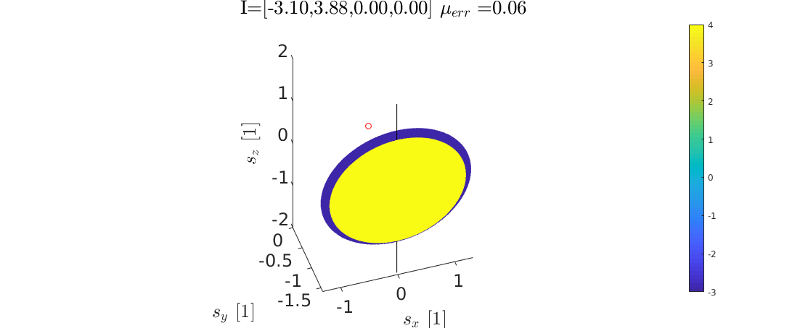

I = 1:Sn;
plane_res =600;
[pX0,pZ0] = meshgrid(linspace(-2,2,plane_res),linspace(-2,2,plane_res));
tick_font_size = 18;
for j=2
J = intersections(j,:);
fign = fign + 1; figure(fign); clf;
set( gcf, 'Color', 'White', 'Unit', 'Normalized', ...
'Position', [0.1,0.1,0.8,0.6] ) ;
axes( 'Position', [0, 0.95, 1, 0.05] ) ;
set( gca, 'Color', 'None', 'XColor', 'White', 'YColor', 'White' ) ;
subplot(1,1,1);
h = plot3(0,0,0,'or');
hold on
plot3([1 1]*intersection_line(1,intersections_inds(j)), [1 1]*intersection_line(2,intersections_inds(j)), [-2,2],'-k')
for i=1:Sn
pX = pX0;
pZ = pZ0;
R1 = nvec_j(I(i));
P01 = p0_jk(I(i),J(i));
pY = (-dot(P01,R1) - R1(1)*pX - R1(3)*pZ)./R1(2);
Ir = R(1,I(i))*pX + R(2,I(i))*pY + R(3,I(i))*pZ;
SPH_ind = sqrt(pX.^2 + pY.^2 + pZ.^2) > 2;
pX(SPH_ind) = NaN;
pY(SPH_ind) = NaN;
pZ(SPH_ind) = NaN;
Ir(SPH_ind) = NaN;
surf(pX,pY,pZ,Ir)
end
hold off
shading interp
xh = xlabel('$s_x$ [1]');
yh = ylabel('$s_y$ [1]');
zh = zlabel('$s_z$ [1]');
cb = colorbar;
title_str = 'I=[';
for i=1:length(1:Sn)
title_str = strcat(title_str,sprintf('%.2f, ', intersections_integers(i,j) ));
end
title_str = strcat(title_str(1:(end-1)),']',' $\mu_{err}=$',sprintf('%.2f',mean(abs(intersections_integers(:,j) - round(intersections_integers(:,j))) )));
th = title(title_str);
set([xh,yh,zh],'Interpreter','latex','fontsize',22);
set(th,'Interpreter','latex','fontsize',20);
axis equal
view([-18,45])
ax = ancestor(h, 'axes');
ax.XAxis.FontSize = tick_font_size;
ax.YAxis.FontSize = tick_font_size;
ax.ZAxis.FontSize = tick_font_size;
end
